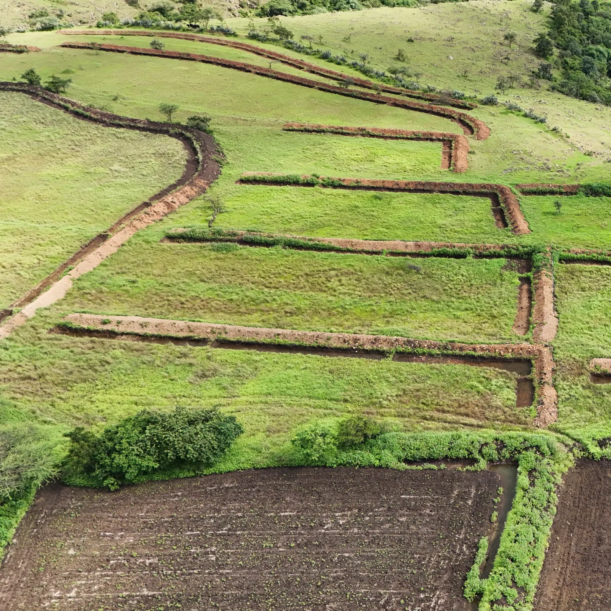
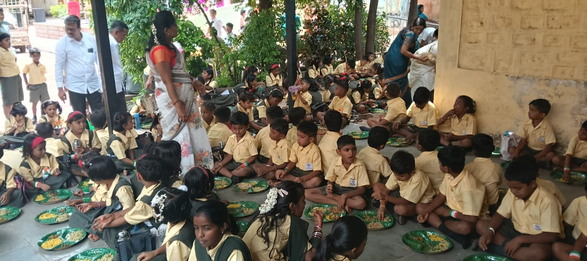

Work & Initiatives
A collection of active projects, field engagements, and community-driven initiatives focused on sustainable agriculture, water management, and rural advancement across Maharashtra, executed through Model Action for Rural Change (MARCH).
Groundwater Management
Rural Water Security
Watershed Development Project
Grassroots Programmes
Groundwater Resource Management & Water Security
Working in alignment with government frameworks like Atal Bhujal Yojana and Jal Jeevan Mission, our efforts focus on mobilising community participation for sustainable groundwater management. We help facilitate local water security plans, monitoring schemes, and rainwater harvesting models to build climate resilience for farming communities.

Ecosystem Restoration
Spearheading native tree plantations, slope stabilization, and habitat recovery to reverse land degradation, enhance biodiversity, and restore ecological balance in micro-catchments.

Watershed Development
Constructing check dams, continuous contour trenches, and bunding systems to reduce soil erosion and rejuvenate local micro-catchments. Facilitating soil and water conservation structures across drought-prone rural stretches using participatory planning methods.

Youth Empowerment
Conducting vocational training, capacity-buliding workshops and skill development programs to create sustainable employment and entrepreneurship opportunities for rural youth.